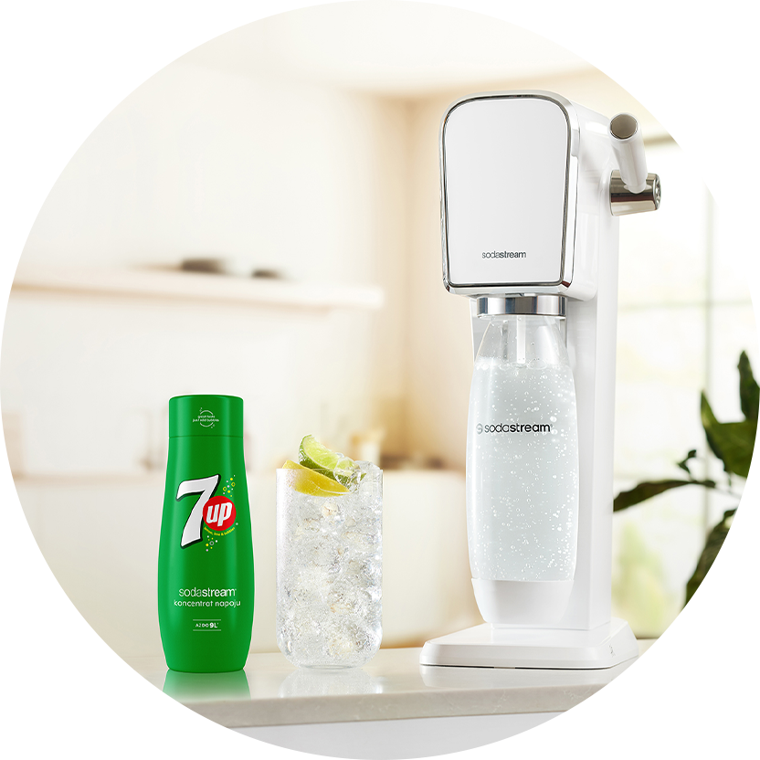

Syrop
SODASTREAM
SYROP 7up, 440 ML
Z pomocą syropu 7UP i ekspresu SodaStream odtworzysz kultowy smak 7UP w zaledwie kilka chwil. Zasmakuj perfekcyjnego połączenia cytrusów i świeżych orzeźwiających bąbelków. Ugaś pragnienie swoim własnym orzeźwiającym napojem przygotowanym w kuchni. Postaw na produkty SodaStream – doskonałą alternatywę dla standardowych napojów oraz lepszy wybór dla naszej planety!
jedna sodastream
wiele możliwości
SAME ZALETY
Dzięki syropowi 7UP od SodaStream szybko odtworzysz kultowy, cytrusowy smak 7UP. Dodatkowo połączysz go z taką ilością bąbelków, jaką lubisz. Możesz przygotować słabo, średnio lub mocno nagazowany napój. Dzięki syropowi zapomnisz również o kupowaniu, dźwiganiu oraz wyrzucaniu masy plastikowych butelek, które zaśmiecają środowisko.

gazuj
miksuj
smakuj
Gdy Twoja Mirinda będzie już gotowa możesz pójść jeszcze o krok dalej.
Dla efektu „łał”
zwilż krawędź szklanki (np. sokiem z cytryny),
a następnie zanurz ją w wysypanym na
talerzyk cukrze. Do tak
przygotowanej szklanki dodaj swoje ulubione dodatki (np. plasterki
pomarańczy, kostki lodu, zioła) i wlej gotową Mirindę. Smacznego!
JEDNA SODASTREAM - WIELE MOŻLIWOŚCI
SodaStream rozciąga przed Tobą horyzonty pełne możliwości. Oprócz syropu 7UP oferujemy całą paletę smaków. Wypróbuj energetyzujące Pepsi, różowego Pink Grapefruita czy egzotyczną mieszankę Orange Mango. Pozwól sobie na odkrywanie nowych smaków i bądź zawsze przygotowany/a na wizytę niespodziewanych gości.
SPRAWDŹ NASZ PRZEPIS NA ORZEŹWIENIE
#PushForBetter